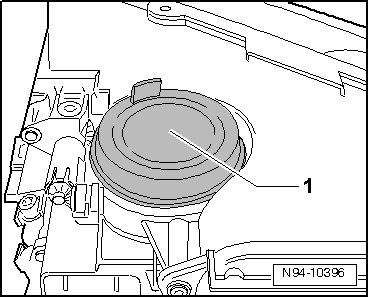
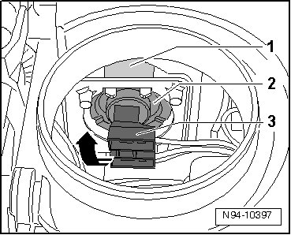
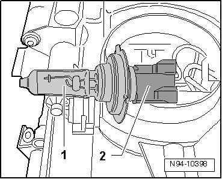
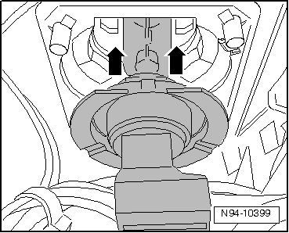

Cornering Lamp Bulb
HID Headlamps with Cornering Lamp, through 11.06
Cornering Lamp Bulb
• Left Cornering Lamp (L148) and Right Cornering Lamp (L149) can be checked using Headlamp Range/Cornering Lamp Control Module (J745) Output Diagnostic Test Mode (DTM) --> [ Headlamp Range/Cornering Lamp Control Module Output Diagnostic Test
Mode ] HID Headlamps with Cornering Lamp, through 11.06.
• Illustrations depict replacement of cornering lamp at right headlamp.
• Procedure to replace Left Cornering Lamp (L148) and Right Cornering Lamp (L149) is the same.
Removing
- Switch off ignition, switch off all electrical consumers and remove ignition key.
- Remove headlamp --> [ Headlamps, through 11.06 ] Headlamps, through 11.06.
- Pull off cover cap - 1 - on top of headlamp housing.

• The cornering lamp bulb - 2 - is clipped into the reflector - 1 -.

• When removing cornering light bulb, connector - 3 - is not removed next.
- Push harness connector and thereby the lamp socket downward until the lamp can be felt as loose.
- Remove cornering light bulb from reflector by grasping connector - 3 -.
- Guide cornering lamp with harness connector connected out of headlamp housing in - direction of arrow -.
- Disconnect harness connector - 2 - of cornering lamp - 1 -.

Installing
Install in reverse order of removal, noting the following:
• When installing cap, ensure proper seating. It is destroyed by ingress of water into headlamp.
• Do not touch the glass of the light bulb, when installing. Your fingers will leave traces of grease on the glass which, when the lamp is switched on, will evaporate and cloud the glass.
- Connect harness connector - 2 - of cornering lamp - 1 -.
- Guide cornering lamp with harness connector connected into headlamp housing.
- Push cornering lamp into reflector in - direction of arrow - as depicted in the illustration.

• Cornering light bulb must engage audibly.
- Check headlamp for function.
- Check and adjust headlamp aim if necessary